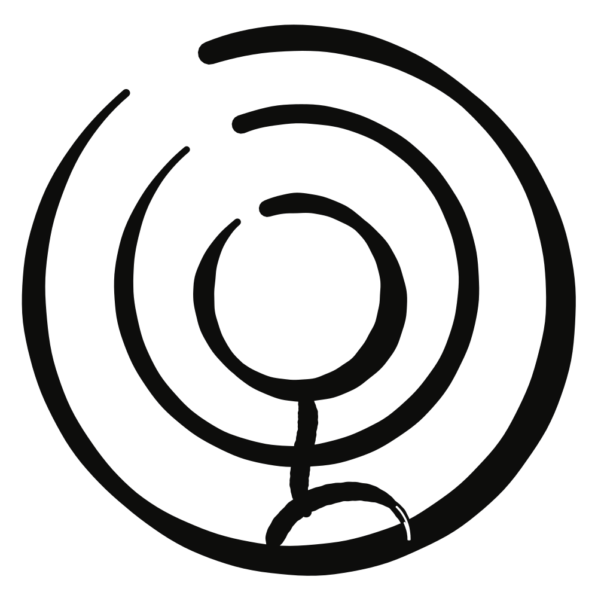

Experimental assets
Everything extra made so far, kept apart from the functional files in assets/. To use one on a page, copy it into assets/. Do not link pages to this folder.
Read first
- DESIGN.mdThe brief: the two constants, the rules, and how to make video, animation, 2D and 3D from lines.
- The logo pageThe three marks, what every part means and how each was made. Refer to it before any work that touches the logo.
The collection
- Assets and filmsBackgrounds, animations, figures, objects, dividers, stories and short films, with previews.
- ExtrasFull-size renders, sound, a contact sheet for each film, and the two rejected films.